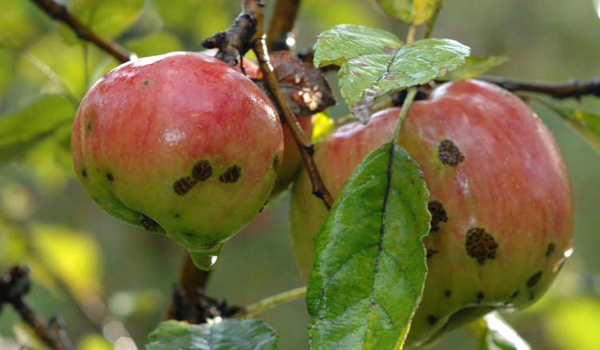

Agricultural Diseases
Fusarium wilt
Description: Fusarium wilt is caused by various species of the Fusarium fungus. It infects the vascular system of plants, leading to wilting, yellowing of leaves, and eventual plant death.
Management: Rotate crops, use resistant varieties, practice good sanitation by removing and destroying infected plants, and use soil solarization to reduce fungal populations in the soil.
Black Sigatoka
Description: Black Sigatoka, caused by the fungus Pseudocercospora fijiensis, affects banana plants. It causes dark lesions on leaves, leading to defoliation and reduced fruit yield.
Management: Apply fungicides preventatively, practice good sanitation by removing and destroying infected leaves, and use resistant banana varieties where available.
Wheat Rust
Description:Wheat rust is caused by fungal pathogens belonging to the Puccinia genus. It appears as yellow, orange, or reddish-brown pustules on wheat leaves, reducing photosynthetic capacity.
Management:Plant resistant wheat varieties, apply fungicides preventatively, practice crop rotation, and remove volunteer wheat plants to break the disease cycle.

Corn Smut
Description:Corn smut is caused by the fungus Ustilago maydis. It forms large, swollen galls on various parts of the corn plant, including ears, tassels, and stalks.
Management:Remove and destroy infected plants, rotate crops, practice deep plowing to bury infected plant debris, and use fungicides if necessary.
Apple Scab
Description:Apple scab is caused by the fungus Venturia inaequalis. It appears as dark, scabby lesions on leaves and fruit, leading to defoliation and reduced fruit quality.
Management:Plant resistant apple varieties, apply fungicides preventatively, practice good sanitation by removing fallen leaves and fruit, and promote good air circulation within the orchard.
Black Spot
Description:Black spot is one of the most common diseases found on roses, but it can also occur on other ornamental and garden plants. This fungal disease causes black, round spots that form on the upper sides of leaves. Lower leaves are usually infected first. Severe infestations cause infected leaves to turn yellow and fall off the plant. Black spot is a problem during extended periods of wet weather or when leaves are wet for 6 hours or more. Black spot spores overwinter in the fallen leaves.
Management:Plant in well-draining soil. Keep your plants healthy by providing regular feedings of organic fertilizer. This will help prevent fungal disease in plants. The fungus spores overwinter in plant debris. Remove dead leaves and infected canes from around the plants and disguard in the trash. Do not add to the compost pile. Disinfect your pruners with a household disinfectant after every use. Ethanol or isopropyl alcohol can be used straight out of the bottle. Because water (not wind) spreads the fungal spores, avoid applying water on the leaves. When you water, apply water directly to the roots. Use a soaker hose to water plants prone to the disease.
Blueberry Disease - Botrytis Blight and Fruit Rot
Description:Botrytis blight is caused by the fungus Botrytis cinerea, which overwinters on infected plants. Under favorable conditions, the fungus can infect blossoms, twigs, and fruit. Tips of infected shoots will die back and turn brown to black. Infected blossoms appear water soaked and turn brown, and the discoloration can spread down the twig. This blossom blight stage causes the most loss. Blighted blossoms often cling to clusters. Immature fruits shrivel and turn a bluish purple, whereas ripe, mature fruits become tan. In damp weather, all infected plant parts become covered with the characteristic "gray mold" of the fungus. Spores of the fungus are disseminated primarily by wind.
Management:Cultural practices that improve air movement, such as pruning, aid in the control of blight and fruit rot. Avoid excessive use of nitrogen fertilizer in the spring because rapidly growing tips are more susceptible.

Strawberry Disease - Gray Mold
Description:Botrytis blight usually starts as a blossom blight, which eventually invades the developing fruits, causing them to rot. This rot can destroy the berry within 48 hours and may appear first at the base of the fruit or when the berry is in contact with the soil, other damp surfaces, or other rotten fruit. As ripening increases and humidity remains high, a characteristic gray, fuzzy coating or web, produced by the fruiting of the fungus, covers the strawberry fruit. As the disease progresses, spores are produced and are easily blown or splashed onto healthy foliage. Once the fungus becomes established, it can produce spores continuously throughout the growing season.
Management:Moisture is necessary for the spores to germinate and infect plants; therefore, the disease is favored by high humidity and relatively cool conditions. Practices that help reduce humidity and increase air movement, such as opening up plants by cultivation, controlling weeds, spacing rows and plants farther apart help control gray mold. The fungus thrives on debris, and sanitation is essential for control. Dead plants and fallen leaves should be removed and burned or buried. Some strawberry varieties are less susceptible to gray mold than others. Authors Kathy Demchak Kathy Demchak Senior Extension Associate More By Kathy Demchak You may also be interested in ...

Downy Mildew
Description:Downy mildew colonies often appear first on the underside of leaves, and they sometimes have a bluish tinge1,3. In many cases, they can grow systemically throughout the plant. If growing abundantly on a leaf, downy mildew colonies can be confused with gray mold (Botrytis) or with powdery mildew. Microscopically, they are very easy to tell apart from powdery mildew and Botrytis. On the foliage, small yellow spots develop on the upper sides of the leaf while white to bluish-white fluffy growth forms on the underside of the leaf. As the leaf spot dies, the fluffy growth darkens to gray in color. Infected leaves and branches may be distorted and die.
Management:Plant debris should be removed from the area around the plant and buried, burned, or placed in a closed container. Plants should be spaced to ensure good air circulation around them so that when irrigated or subject to rainfall, leaf surfaces dry quickly. Overhead irrigation should not be used when the weather is generally cool. It is important, during cool damp weather in the spring, to scout highly susceptible plants in order to detect first infections. In particular, roses, pansies, and impatiens should be monitored carefully. Contact Cooperative for information concerning the fungicides that are available to control downy mildew to protect plants during cool, damp weather.

Grape Disease - Downy Mildew
Description:The fungus attacks all green parts of the vine, especially the leaves. Lesions on leaves are angular, yellowish, sometimes oily, and are located between the veins. As the disease progresses, a white cottony growth can be observed on the lower leaf surface. Severely infected leaves will drop. If enough defoliation occurs, the overwintering buds will be more susceptible to winter injury. Infected shoot tips become thick, curl, and eventually turn brown and die. Young berries are highly susceptible, appearing grayish when infected. Berries become less susceptible when mature. Infected berries remain firm compared to healthy berries, which soften as they ripen. Infected berries will eventually drop.
Management:Some control can be achieved by preventative management practices. Spring cultivation to bury fallen, infected leaves from the previous year may help reduce early season disease pressure. Pruning out the ends of infected shoots and practices that improve air circulation and speed drying within the vine canopy will also help to control downy mildew. Fungicides, however, are the most important control measure, especially on susceptible varieties. They should be applied just before bloom, 7 to 10 days later (usually at the end of bloom), 10 to 14 days after that, and, finally, 3 weeks after the third application. For varieties very susceptible to downy mildew, or where the disease was severe the previous season, an additional application is suggested about 2 weeks before the first blossoms open.